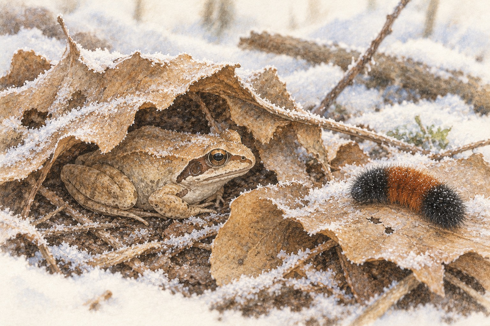

01How can a wood frog freeze and live?

Look closer. Find the small frog tucked under the fallen leaves, and the fuzzy banded caterpillar resting on a leaf nearby.
A little explanation. When a wood frog starts to freeze, its liver pours out a sugar called glucose. Ice forms in its body, but outside its cells, and the glucose helps protect the cells. When the frog thaws, its heart is the first part to start again.
Try this. Draw a big circle for one frog cell. Draw ice crystals only outside the circle. Draw sugar dots near the cell. Tell how the sugar helps keep the cell safe while ice forms around it.